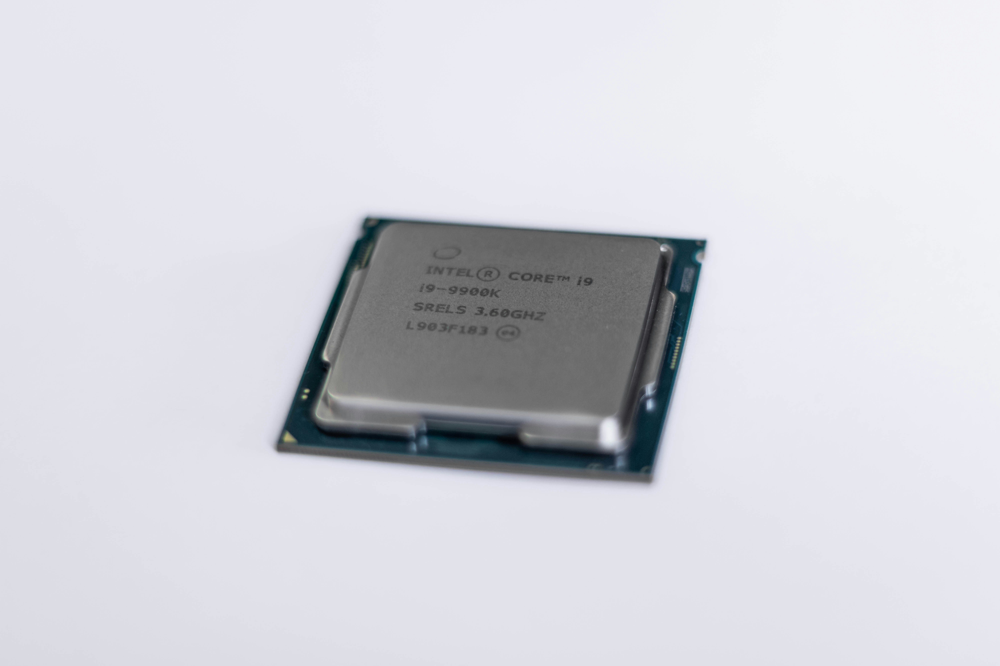

1968
تأسيس إنتل
أسس روبرت نويس وجوردون مور شركة إنتل، لتبدأ رحلة من الابتكار التكنولوجي.
استكشف رحلة إنتل عبر الزمن، واكتشف كيف شكل التزامنا بالابتكار مستقبلًا أكثر استدامة للتكنولوجيا وكوكبنا.
1968
أسس روبرت نويس وجوردون مور شركة إنتل، لتبدأ رحلة من الابتكار التكنولوجي.

1971
قدمت إنتل معالج 4004، أول معالج دقيق تجاري في العالم.

1978
أرسى معالج 8086 أساس بنية x86 المستخدمة في كثير من أجهزة الكمبيوتر والخوادم.

1985
قدم معالج 386 بنية 32 بت، وفتح آفاقًا جديدة للأداء وتعدد المهام.

2006
بلغت انبعاثات غازات الدفيئة التشغيلية ذروتها، ثم بدأت جهود الحد منها.
2020
أطلقت إنتل استراتيجية وأهداف RISE لتعزيز العمل المناخي وإدارة المياه وتقليل النفايات.

2022
أعلنت إنتل هدفها للوصول إلى صافي انبعاثات صفري من النطاقين الأول والثاني بحلول 2040.

2023
حققت الشركة استخدامًا للكهرباء المتجددة بنسبة 99٪ حول العالم.
2024
جمعت إنتل الموردين والمسؤولين وقادة الصناعة للتعاون على تصنيع أشباه موصلات أكثر استدامة.
نعمل على تقليل الانبعاثات، وحماية الموارد، ودعم حلول تصنيع أكثر كفاءة في استخدام الطاقة.
نسرّع انتقالنا إلى مصادر طاقة متجددة، ونخفض بصمتنا الكربونية عبر العمليات العالمية.
تركز مبادراتنا على الشراكات، والابتكار المسؤول، وبناء مستقبل أكثر شمولاً واستدامة للجميع.